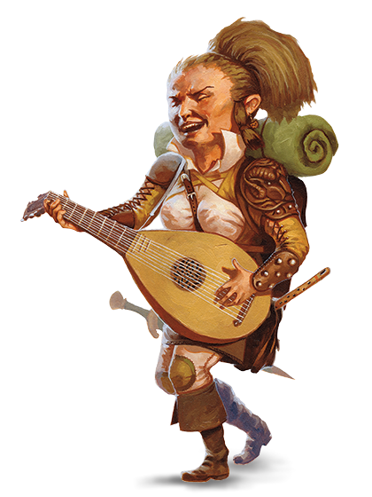

Целью большинства полуросликов является домашний уют. Место, где
можно поселиться в покое и тишине, подальше от мародёрствующих
чудовищ и сражающихся армий. Огонь очага, сытная пища, добрая
выпивка и добрая беседа. Хотя некоторые полурослики проживают свой
век в удалённых сельских общинах, другие сбиваются в постоянно
кочующие общины, влекомые открытыми дорогами, широкими горизонтами
и возможностью открыть чудеса новых мест и новых людей. Но даже
такие кочевники любят покой, вкусную еду, свой очаг и свой дом,
даже если это повозка, трясущаяся по пыльной дороге или плот,
плывущий по течению реки.

Маленькие и практичные
Крошечные полурослики выживают в мире, полном более крупных существ,
стараясь избегать внимания, а если это оказывается невозможным, то
избегая враждебности. Имея рост около 3 фт. (90 сантиметров), они
кажутся относительно безвредными, и благодаря этому успешно
существуют столетиями, оставаясь в тени империй,войн и политической
борьбы. Они склонны к полноте, и весят от 40 до 45 фунтов (от 18 до
20 килограмм).
Кожа у полуросликов встречается от смуглой до бледной, с румянцем.
Волосы обычно коричневые или рыже-коричневые, вьющиеся. Глаза
полуросликов карие или ореховые. Мужчины часто отпускают длинные
бакенбарды, но бороды носят редко, а усы тем более. Они любят носить
простую, удобную одежду, предпочитая яркие цвета. Практичность
полуросликов распространяется не только на их одежду. Они
довольствуются удовлетворением основных потребностей и простых
радостей, уделяя совсем мало внимания роскоши. Даже богатейшие из
них предпочитают хранить своё добро в закрытых сундуках и подвалах,
а не выставлять его на всеобщее обозрение. Полурослики умеют
находить простые решения своих проблем, и являются весьма
решительными.
Добрые и любопытные
Полурослики — приветливый и дружелюбный народ. Они ценят дружбу и
родственные связи так же как собственный дом и очаг, лишь в тайне
мечтая о золоте и славе. И даже те из них, кто стали искателями
приключений, обычно отправляются в путь, преследуя цели дружбы или
общества, тяги к переменам или любопытства. Они любят открывать для
себя что-то новое, даже если это совсем простые вещи, вроде
экзотической еды или незнакомого стиля одежды.
Полурослики легко поддаются жалости, и не выносят вида чужих
страданий. Они щедры, и с радостью делятся тем, что имеют, даже в
трудные времена.
Единые с толпой
Полурослики легко вливаются в сообщества людей, дварфов или эльфов,
где их ценят и всегда им рады. Сочетание их врождённых скрытности и
скромности позволяют им легко избегать ненужного внимания.
Полурослики охотно работают с другими, и они верны своим друзьям,
вне зависимости от их вида. Однако, если кто-то из их друзей, семьи
или общины оказывается под угрозой, они способны проявить
удивительную свирепость.
Пасторальные удовольствия
Большинство полуросликов живёт в маленьких, мирных общинах с
большими фермами, среди ухоженных рощ. Они редко создают собственные
королевства, и не держат земель за пределами своих тихих владений.
Они обычно не признают среди себя какого-либо рода знати или
королевской власти, вместо этого прислушиваясь к семейным
старейшинам, руководствуясь их мнением. Семьи сохраняют свой
традиционный уклад, несмотря на подъёмы и падения империй.
Множество полуросликов живёт среди других рас, где усердная работа и
надёжные перспективы принесут им обильное вознаграждение и земные
блага. Некоторые общины полуросликов ведут кочевой образ жизни,
путешествуя на повозках или плавая на суднах от одного места к
другому, не оседая на одном месте постоянно.
Приветливые и положительные
Полурослики стараются поладить с кем угодно, и не склонны выносить
поспешные суждения — особенно отрицательные.
-
О дварфах. «Дварфы — верные друзья, и вы можете
рассчитывать на то, что они всегда держат своё слово. Но им бы не
помешало хотя бы иногда улыбаться».
-
Об эльфах. «Они так прекрасны! Их лица, их музыка, их
грация, всё в них. Они как будто явились из чудесного сна. Но
никто не сможет сказать, что происходит за их улыбающимися лицами
— наверняка больше, чем они нам показывают».
-
О людях. «Люди, на самом деле, во многом похожи на нас. По
крайней мере, некоторые из них. Отойдите от замков и цитаделей,
поговорите с фермерами и скотоводами, и вы обнаружите хороший,
надёжный народ. Нет ничего плохого в баронах и солдатах — вы
должны восхищаться их убеждённостью. И, защищая свои земли, они
также защищают нас».
Поиск возможностей
Полурослики обычно становятся на путь искателя приключений, чтобы
защитить свои общины или поддержать своих друзей или исследовать
огромный наполненный чудесами мир. Для них авантюризм в меньшей
степени карьера, скорее это возможность, а иногда и необходимость.
Имена полуросликов
Полурослику даётся имя, фамилия, и, возможно, прозвище. Фамилии
часто являются прозвищами, которые прилипли так сильно, что стали
передаваться через поколения.
-
Мужские имена: Альтон, Андер, Гаррет, Кейд, Коррин, Лайл,
Линдал, Майло, Меррик, Осборн, Перрин, Рид, Роско, Уэллби, Финнан,
Элдон, Эррих
-
Женские имена: Бри, Вани, Верна, Джиллиан, Китри, Кора,
Кэлли, Лавиния, Лидда, Мерла, Недда, Паэла, Портия, Серафина,
Трим, Шаэна, Эндри, Юфемия
-
Фамилии: Вверхтормашкин, Высокохолм, Галькоброс,
Добробочка, Зеленофляг, Кустосбор, Лугодуг, Подветкин, Репейник,
Чайнолист
Особенности полуросликов
Как и другие полурослики, ваш персонаж обладает определёнными
качествами.
-
Увеличение характеристик. Значение вашей Ловкости
повышается на 2.
-
Возраст. Полурослики достигают зрелости к 20 годам, и
обычно живут до середины своего второго столетия.
-
Мировоззрение. Большинство полуросликов законно-добрые. Как
правило, они добросердечны и любезны, не выносят чужой боли и не
терпят притеснения. Также они являются поборниками порядка и
традиций, сильно полагаясь на общество и предпочитая проверенные
пути.
-
Размер. Полурослики в среднем примерно 3 фута (90
сантиметров) ростом и весят около 40 фунтов (18 килограмм). Ваш
размер — Маленький.
-
Скорость. Ваша базовая скорость передвижения составляет 25
фт.
-
Везучий. Если при броске атаки, проверке характеристики или
спасброске у вас выпало «1», вы можете перебросить кость, и должны
использовать новый результат.
-
Храбрый. Вы совершаете с преимуществом спасброски от
испуга.
-
Проворство полуросликов. Вы можете проходить сквозь
пространство, занятое существами, чей размер больше вашего.
-
Языки. Вы можете говорить, читать и писать на Общем и языке
Полуросликов. Их язык не является секретным, но они не торопятся
делиться им с остальными. Пишут они мало, и почти не создали
собственной литературы, но устные предания у них очень
распространены. Почти все полурослики знают Общий, чтобы общаться
с людьми в землях, куда они направляются, или по которым
странствуют.
Разновидности полуросликов
Существует два основных вида полуросликов. Они скорее являются двумя
крупными родами, нежели разными видами. Выберите один из них.
Коренастый
Коренастые полурослики выносливее других и обладают некоторой
устойчивостью к ядам. Поговаривают, что в их жилах течёт толика
дварфской крови. В мире Забытых Королевств таких полуросликов
зовут сильными сердцем, и чаще всего они встречаются на юге.
-
Увеличение характеристик. Значение вашего Телосложения
увеличивается на 1.
-
Устойчивость коренастых.Вы совершаете с преимуществом
спасброски от яда, и вы получаете сопротивление к урону ядом.
Легконогий
Легконогие полурослики умеют отлично скрываться, в том числе
используя других существ как укрытие. Они приветливы и хорошо
ладят с другими. В мире Забытых Королевств легконогие являются
самой распространённой ветвью полуросликов. Легконогие более
других склонны к перемене мест, и часто селятся по соседству с
другими народами, или ведут кочевую жизнь. В мире Серого Ястреба
таких полуросликов называют мохноногими или великанчиками.
-
Увеличение характеристик. Значение вашей Харизмы
увеличивается на 1.
-
Естественная скрытность. Вы можете предпринять попытку
скрыться даже если заслонены только существом, превосходящими
вас в размере как минимум на одну категорию.